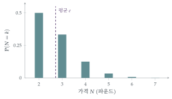

STEP I 1996, 문제 13
계속 읽기 전에 문제를 먼저 읽어 보자. 문제는 STEP Support Programme의 문제 데이터베이스에 있다: step.maths.org/questions/96-s1-q13
도입
우표를 파는 기묘한 방법이 있다. 사는 사람은 어느 컵 아래에 우표가 숨어 있는지 계속 맞혀야 하고, 한 판이 지날 때마다 컵이 하나씩 늘어난다. 그리고 처음으로 틀렸을 때 탁자 위에 놓인 컵 하나당 1파운드씩 낸다. 평균적으로 그가 내는 돈은 \(\pounds e\), 즉 약 \(\pounds 2.72\)이다.
수 \(e\)는 확률에서 묘할 정도로 자주 나타난다. 아무도 자기 셔츠를 돌려받지 못할 확률(9.8 절), 비서 문제(secretary problem, 12.12 절), 포아송 분포(Poisson distribution)가 그 예이다. 이 문제는 \(e\)가 등장하는 사례 가운데 아마 가장 단순한 것이며, 놀랍게도 또 다른 유명한 퍼즐과 정확히 같은 분포를 가진다. \(0\)과 \(1\) 사이의 난수를 몇 개 더해야 합이 \(1\)을 넘을까? 평균적으로 \(e\)개이다.
시작하기 전에
\(N = 4\)가 되려면 무슨 일이 일어나야 하는가? 그 확률은 얼마인가?
짐(Jim)은 컵이 \(2\)개일 때(확률 \(\frac12\))와 \(3\)개일 때(\(\frac13\)) 맞히고, 컵이 \(4\)개일 때 틀려야 한다(\(\frac34\)). 따라서 \(\mathrm{P}(N = 4) = \frac12\cdot\frac13\cdot\frac34 = \frac{3}{4!} = \frac18\)이다.
차근차근 풀기
단계 1 분포
\(N = k\) (\(k \geq 2\))가 되려면 짐은 컵이 \(2, 3, \ldots, k - 1\)개일 때 맞히고 \(k\)개일 때 틀려야 한다. \[\mathrm{P}(N = k) = \frac12\cdot\frac13\cdots\frac{1}{k - 1}\cdot\frac{k - 1}{k} = \frac{k - 1}{k!}.\] (검산: \(\frac{1}{2!} + \frac{2}{3!} + \frac{3}{4!} + \cdots = \sum_{k \geq 2}\bigl(\frac{1}{(k-1)!} - \frac{1}{k!}\bigr) = 1\)이며, 이는 망원급수(telescoping sum)이다.)
단계 2 기댓값
\(k\cdot\frac{k - 1}{k!}\)를 간단히 하여라. 어떤 급수가 나오는가?
\[\mathrm{E}(N) = \sum_{k \geq 2}\frac{k(k - 1)}{k!} = \sum_{k \geq 2}\frac{1}{(k - 2)!} = \frac{1}{0!} + \frac{1}{1!} + \cdots = e. \qed\]
단계 3 분산
\(k^2 = k(k - 1) + k\)로 쓰거나 \(\frac{k^2(k-1)}{k!}\)를 직접 간단히 하여 \(\mathrm{E}(N^2)\)를 구하여라.
\[\mathrm{E}(N^2) = \sum_{k \geq 2}\frac{k^2(k - 1)}{k!} = \sum_{k \geq 2}\frac{k}{(k - 2)!} = \sum_{j \geq 0}\frac{j + 2}{j!} = \sum_{j \geq 1}\frac{1}{(j - 1)!} + 2\sum_{j \geq 0}\frac{1}{j!} = e + 2e = 3e.\] 따라서 분산(variance)은 \(\mathrm{Var}(N) = 3e - e^2 = e(3 - e) \approx 0.766\)이다.■

돌아보기
확률의 곱. 독립(independent)인 성공이 이어지다가 실패로 끝나는 사건의 확률은 곱으로 주어지고, 이 곱은 \(\frac{k-1}{k!}\)로 간단히 정리되었다.
계승을 약분하기. \(k\)나 \(k^2\)를 곱한 뒤 약분하자 합이 지수급수(exponential series)로 바뀌었다.
첨자 이동으로 구한 \(\mathrm{E}(N^2)\). \(j = k - 2\)로 첨자를 바꾸자 합이 \(e\) 두 개로 나뉘었다.
숨은 수학
모습만 바꾼 같은 분포
난수 \(U_1, U_2, \ldots\)를 \([0, 1]\)에서 균등하게(uniformly) 뽑고, 그 합이 \(1\)을 넘는 데 필요한 개수를 \(M\)이라 하자. 처음 \(k\)개의 수를 더한 값이 \(1\)보다 작을 확률은 영역 \(\{u_1 + \cdots + u_k < 1, u_i \geq 0\}\)의 부피이며, 이 값은 \(\frac{1}{k!}\)이다(넓이가 \(\frac12\)인 삼각형, 부피가 \(\frac16\)인 사면체(tetrahedron) 등). 따라서 \[\mathrm{P}(M > k) = \frac{1}{k!}, \qquad \mathrm{P}(M = k) = \frac{1}{(k - 1)!} - \frac{1}{k!} = \frac{k - 1}{k!},\] 이고, 이는 \(N\)의 분포와 정확히 같다. 두 문제 모두에서 \(\mathrm{P}(N > k) = \frac{1}{k!}\)이다. 컵 문제에서 이것은 \(k - 1\)번 연속으로 맞힐 확률이다. 공식 \(\mathrm{E}(N) = \sum_{k \geq 0}\mathrm{P}(N > k)\)(9.9 절에서 나온 공식)를 쓰면 한 줄 만에 \(\mathrm{E}(N) = \sum\frac{1}{k!} = e\)를 얻는다.
\(e\)가 자꾸 나타나는 이유
\(k\)개의 대상이 특정한 순서로 놓이는 경우이든, 확률이 \(\frac12, \frac13, \ldots\)인 사건 \(k\)개가 연달아 일어나는 경우이든, 단체(simplex)의 부피이든, 확률에 \(\frac{1}{k!}\)이 들어 있으면 \(k\)에 대한 합은 지수급수가 된다. 교란순열(derangement, 9.8 절)에서는 \(\sum\frac{(-1)^k}{k!} = e^{-1}\)이 나왔고, 여기서는 \(\sum\frac{1}{k!} = e\)가 나왔다. 그리고 일어날 가능성이 낮은 독립 사건이 많이 있을 때 생기는 \(\bigl(1 - \frac1n\bigr)^n \to e^{-1}\) 꼴의 극한은 비서 문제와 포아송 분포에 \(e\)가 나타나는 이유를 설명해 준다.
“합이 \(1\)을 넘는” 문제를 이용하면 실험으로 \(e\)를 추정할 수 있다. 난수를 만들어 \(1\)을 넘는 데 몇 개가 필요한지 세고, 이를 여러 번 반복하여 평균을 내면 된다. 이는 \(\pi\)를 추정하는 뷔퐁(Buffon)의 바늘(12.20 절)과 사촌 격이다. 카지노의 이름을 딴 이러한 몬테카를로(Monte Carlo) 방법은 직접 계산하기 어려운 양을 무작위 표본추출로 추정한다. 오늘날 이 방법은 입자물리학에서 금융에 이르기까지 과학 전반에서 쓰이며, 주로 고차원 적분에 사용된다.
사고 기술
기댓값이 계승을 포함한 합으로 주어지면, 표준적인 급수(지수급수, 기하급수, 이항급수)가 나타날 때까지 항을 간단히 하라.
대학에서는 생성함수(generating function)가 이 과정을 체계화한다. 확률생성함수(probability generating function) \(\mathrm{E}(t^N)\)는 분포 전체를 하나로 담고 있으며, \(t = 1\)에서의 도함수 값으로부터 평균과 분산을 얻는다.
더 도전하기
생성함수. \(\mathrm{E}(t^N) = 1 + (t - 1)e^t\)임을 보이고, 이를 이용하여 \(\mathrm{E}(N)\)과 \(\mathrm{E}(N(N - 1))\)을 구하여라.
꼬리 공식. 음이 아닌 정수 값을 갖는 확률변수(random variable)에 대하여 \(\mathrm{E}(N) = \sum_{k \geq 0}\mathrm{P}(N > k)\)임을 증명하고, 이를 이용하여 한 줄 만에 \(\mathrm{E}(N)\)을 구하여라.
컵 하나로 시작하기. 게임이 컵 하나(짐이 틀릴 수 없는 경우)로 시작한다면 분포는 어떻게 달라지는가? 가격의 기댓값은 얼마인가?
단체. \(\{u_1 + u_2 + u_3 < 1, u_i \geq 0\}\)의 부피가 \(\frac16\)임을 보이고, 수학적 귀납법(induction)을 이용하여 \(k\)차원에서는 그 부피가 \(\frac{1}{k!}\)임을 보여라.
더 읽을거리
Eli Maor, e: The Story of a Number (Princeton University Press). 확률에서의 등장을 포함한 \(e\)의 역사를 다룬다.
Geoffrey Grimmett & Dominic Welsh, Probability: An Introduction (Oxford University Press). 생성함수를 다룬다.
Paul Nahin, Digital Dice (Princeton University Press). 몬테카를로 시뮬레이션으로 푸는 확률 퍼즐 모음이다.